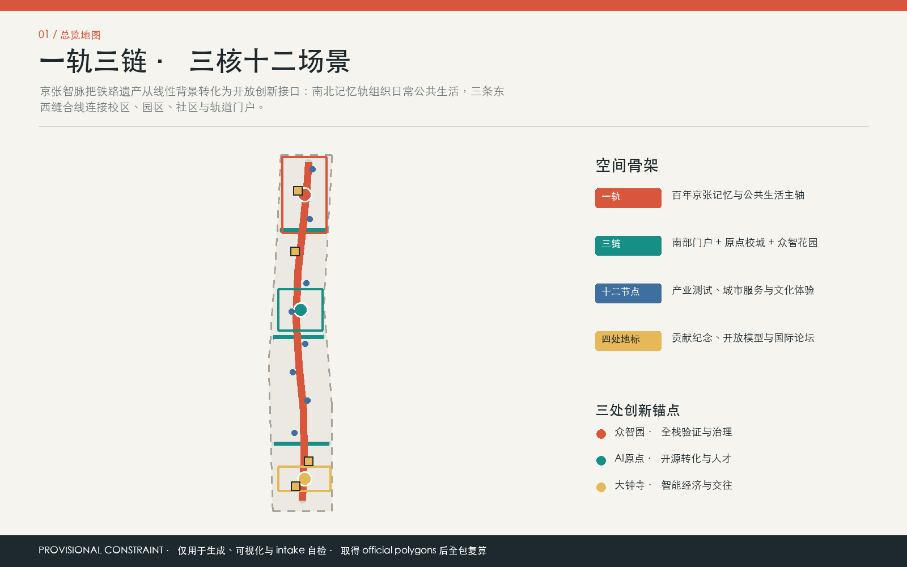
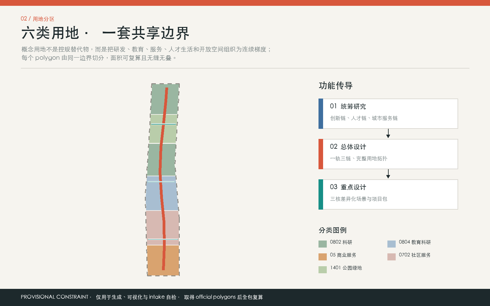
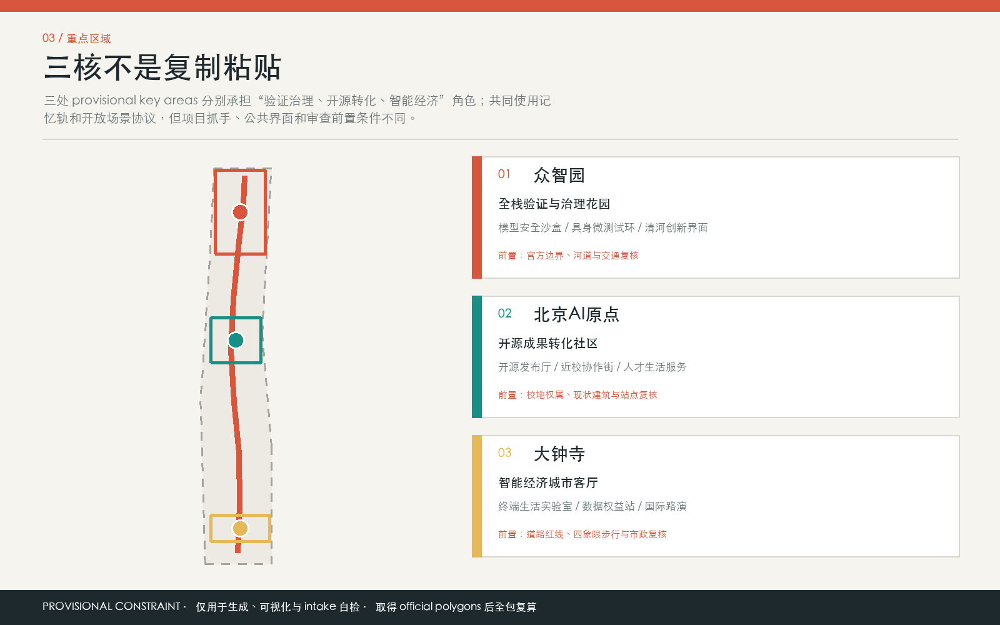
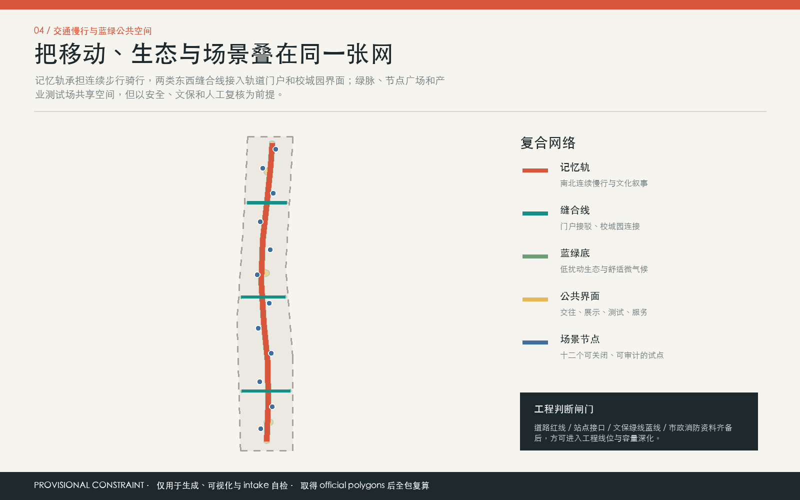
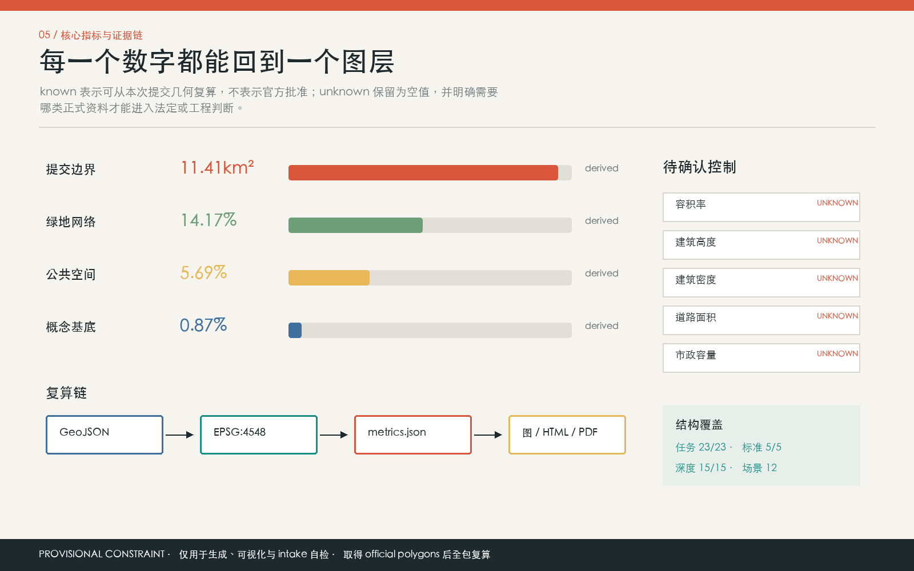

京张智脉：百年轨迹上的开放智能城市公地
以一条南北记忆轨、三条东西缝合线、三处差异化创新锚点和十二个可治理 AI 场景节点，构建可复算、可审计、可由专业团队继续深化的京张创新带参考方案。
京张智脉：百年轨迹上的开放智能城市公地
“京张智脉 / JINGZHANG COMMONS”不是一套已审定规划，而是一套开放、可检验的城市设计参考方案。它把京张铁路的时间纵轴、中关村的创新网络和面向日常生活的 AI 服务组织为“一轨、三链、三锚、十二节点”：一条南北记忆轨连续串联历史、生态与公共生活；三条东西缝合线连接片区两侧；三处重点区域承担不同创新环节；十二个节点把技术转化为可体验、可退出、可人工复核的公共服务。
> **效力与精度声明**：本方案的总体设计范围及三处重点区域均采用仓库提供的 provisional rough polygons。它们仅用于临时生成、拓扑检查、离线展示与设计讨论，不是官方红线，不支撑法定控制、宗地判断、工程可行性或精确面积结论。正文全部空间动作均为“概念建议”“参考方案”或“可供专业团队深化研究”的材料；官方 polygon、控规和现状调查到位后，必须重算全部图层、指标、图件、HTML 与 PDF。[source:DATA-SRC-PROVISIONAL-BOUNDARIES-20260605] [standard:PROJECT-OFFICIAL-ANNOUNCEMENT]
设计依据与资料清单
1. 证据分级与生成方法
方案以资格预审公告确认项目名称、三层任务和工作深度，但不从公告推导官方 polygon、法定指标或实施承诺。[source:DATA-SRC-OFFICIAL-ANNOUNCEMENT-20260509] 面向智能体任务书用于确认三大定位、五大功能、六项智能体任务及公共合规边界，不用于替代法定规划。[source:DATA-SRC-AGENT-TASKBOOK-20260518] 来源登记表用于判断资料能否进入正式证据链，[source:SOURCE-REGISTRY]；处理后的事实包只承担任务导航，不新增事实权威，[source:PROCESSED-FACT-PACK]。临时边界的来源、精度和替换条件另行登记，[source:DATA-SRC-PROVISIONAL-BOUNDARIES-20260605]。
专业方法分别依据《城市设计管理办法》组织公共空间、风貌和建筑界面，[source:DATA-SRC-MOHURD-URBAN-DESIGN-MEASURES] [standard:MOHURD-URBAN-DESIGN-MEASURES]；依据控规编制审批办法区分设计研究与法定审批，[source:DATA-SRC-MOHURD-CONTROL-DETAILED-PLANNING] [standard:MOHURD-CONTROL-DETAILED-PLANNING]；依据用地用海分类指南表达概念用地代码，[source:DATA-SRC-MNR-LAND-USE-CLASSIFICATION-202311] [standard:MNR-LAND-USE-CLASSIFICATION-GUIDE]。项目公告与智能体任务书的响应分别由 [standard:PROJECT-OFFICIAL-ANNOUNCEMENT] 和 [standard:PROJECT-AGENT-OPEN-CALL-TASKBOOK] 约束。建筑工程设计文件深度的可用官方或清权正文尚未进入资料包，因此 [standard:MOHURD-ARCH-DESIGN-DEPTH-2016] 只登记为资料缺口，不据此作建筑专业结论。
生成顺序为：锁定临时约束边界 [data:geometry/site_boundary.geojson#SITE-001] 与重点区 [data:geometry/key_areas.geojson#PROV-KEY-001]；用共享切割线形成无缝概念用地；再生成道路、绿地、公共空间、容量测试单元、场景节点和分期；最后投影到 EPSG:4548 复算指标。现状诊断的核心判断不是“现状已知”，而是明确九类资料缺口，并把不确定性写入 assumptions.json。[depth:existing_conditions_diagnosis]

图 1. “京张智脉”总览。浅色虚线是临时约束，不是官方红线；视觉重点为记忆轨、缝合线、创新锚点、场景节点与证据关系。图形由本提交 GeoJSON 和指标原创生成，不含外部底图或第三方图片。
2. 可用性边界
- **可作为任务与方法依据**：公告、已清权智能体任务书、住建与自然资源部门公开规范。
- **只作临时空间约束**：仓库 provisional polygons 及其派生面积、图面与拓扑检查。
- **只作比较研究背景**：国际案例官网；不移植其数值、商标、图片或治理承诺。
- **仍为 unknown**：官方总体与重点区 polygon、现状建筑与权属、容积率、建筑高度与密度、道路红线与断面、文保/绿线/蓝线、市政容量、消防、防洪排涝、投资和实施主体。
上述边界使本成果具备“问题定义、概念结构、空间证据、治理门槛、复算路径”五种可转化价值，同时避免把 AI 生成的几何精度误认为现场测绘或政府审定结论。[depth:risk_missing_data]
三层范围工作框架
1. 从战略到节点的递进
**统筹研究范围**用于研究产业链、人才链、创新服务和“三区两翼”的外部联系，不在提交中伪造一个新的外围红线。其成果是生态机制、协同网络、活动系统和未来城市原则。**总体设计范围**暂以 SITE-001 作为提交内计算容器，组织一轨三链、概念用地、公共空间、交通和分期；投影复算面积为 11,412,825.386 平方米，约 11.413 平方公里，低置信度且不可替代公告语境或官方面积。[data:geometry/site_boundary.geojson#SITE-001] [metric:site_area_sqm] **重点区域范围**由三处临时 polygon 表达，仅支撑方向性小方案；三处数量为 3，面积合计 3,692,893.005 平方米，后者为低置信度临时复算值。[data:geometry/key_areas.geojson#PROV-KEY-001] [metric:key_area_count] [metric:key_area_provisional_area_sqm]
三层成果逐级传导：统筹层确定“文化、生活、创新”的价值框架和要素回路；总体层把回路转换为连续公共空间、功能分区和慢行连接；重点区层将其落实为可测试的界面、节点、容量单元和治理清单。这一组织方式达到可审阅的工作深度，但不跨越审批权限。[depth:three_level_scope_framework] [standard:MOHURD-CONTROL-DETAILED-PLANNING]
2. 临时边界替换协议
官方数据到位后，应先验证坐标系、来源与版本，再按顺序替换 site_boundary 和 key_areas，重切 land_use，裁切或重绘 buildings、roads、green_space、public_space、constraints 与 phasing，随后重算全部 known 指标并重新生成五张图、两个 HTML 和两套 PDF。任何只替换边界、不更新派生成果的版本都应视为证据链失效。

图 2. 三层工作框架。彩色分区是共享边界的概念拓扑，不是现行或拟议控规；临时外框保持低对比度，以突出空间策略。[depth:overall_spatial_structure]
统筹研究范围产业与未来城市研究
1. 总体概念、名称与视觉识别
主名称“京张智脉”把“京张”作为百年基础设施与公共记忆，把“智脉”同时解释为人才、知识、场景和慢行的流动网络；英文名 **JINGZHANG COMMONS** 强调共同使用、共同验证和共同维护，不把空间包装为单一企业园区。三大定位完整保留为“百年京张文化带、都市 AI 生活体验带、AI 融合创新带”；五大功能对应“AI 全栈自主创新体系、世界级 AI 创新生态、AI+场景赋能新范式、智能化 AI 活力城市、AI 治理全球话语权”。[source:DATA-SRC-AGENT-TASKBOOK-20260518] [standard:PROJECT-AGENT-OPEN-CALL-TASKBOOK]
Logo 方向采用一个原创的“轨道括号”符号：两条纵向线代表铁路记忆与开放数据链，三条短横线代表三条东西缝合线，三个实心节点代表三处创新锚点；符号可在导视、活动证章、代码仓库和无障碍触觉标识中等比例缩放。主色不是单一科技蓝，而采用铁路朱红、公共空间绿、治理墨色和证据黄；中文与英文均使用可合法获得的系统字体，最终字体、图标、地标和企业标识须在实施前单独清权。该方向是品牌参考方案，不表示组织方已采纳。
2. 三区两翼与要素回路
- **众智园 AI 自主创新加速区**：承担模型、具身智能、安全评测与治理展示的“验证锚”。
- **北京 AI 原点社区**：承担高校成果、开源社区、人才生活与公共教育的“共创锚”。
- **大钟寺 AI 产业聚集区**：承担智能终端、企业服务、国际路演和城市消费的“转化锚”。
- **中关村科技服务翼**：以知识产权、法务、资本、标准和国际协作连接三锚。
- **小月河场景赋能翼**：以生态空间、社区服务和低扰动公共测试把技术带入日常。
运行回路不是线性“研发后招商”，而是“问题公开 - 原点共创 - 众智验证 - 大钟寺转化 - 两翼服务 - 公共评价 - 版本迭代”。概念研发用地 0802 的提交内面积为 3,464,794.163 平方米，[metric:land_use_research_area_sqm]；四个产业测试验证节点给回路提供可审计入口，[metric:industry_test_scenario_count]。两项数值只描述本方案几何，不是产业供地或项目承诺。[data:geometry/land_use.geojson#LU-004] [data:geometry/constraints.geojson#SCN-02]
3. 六个国际案例的机制转译
| 案例 | 仅作背景的观察 | 可转译机制 | 明确不转译内容 | | --- | --- | --- | --- | | 多伦多 Vector Institute | 研究、人才与产业伙伴形成接口 [source:CASE-TORONTO-VECTOR] | 设置跨机构课题与人才共同体 | 不采用其指标、品牌或图片 | | 蒙特利尔 Mila | 研究机构与社区网络相互支撑 [source:CASE-MONTREAL-MILA] | 建立开源社区与负责任 AI 议程 | 不推定海淀治理结构 | | 新加坡 one-north | 园区、生活与公共空间协同 [source:CASE-SINGAPORE-ONENORTH] | 把工作、学习、居住和场景验证并置 | 不复制开发强度或管控值 | | 伦敦 Knowledge Quarter | 多机构通过区域网络协作 [source:CASE-LONDON-KQ] | 以一轨三链组织跨界共享设施 | 不复制组织名称或标识 | | 剑桥 Kendall Square | 创新区需要长期街区运营 [source:CASE-CAMBRIDGE-KENDALL] | 建立公共空间维护与企业参与规则 | 不把运营成效当本地预测 | | 巴黎 STATION F | 共享创业服务降低协作门槛 [source:CASE-PARIS-STATIONF] | 在原点与大钟寺布置共享服务前台 | 不复制商业模式或空间指标 |
案例研究只支持“接口、网络、共同体和长期治理”四类机制，不构成数值对标。区域协同可进一步连接北纬社区、未来科学城、怀柔科学城、经开区和京津冀创新资源，但合作对象、项目、资金与政策均需另行核实和协商。总体空间结构以概念慢行和公共界面承接上述机制，[data:geometry/roads.geojson#ROAD-001] [data:geometry/public_space.geojson#PUBLIC-003]，而不是把产业策略停留在口号。[depth:overall_spatial_structure]
总体设计范围城市更新与控规深度城市设计
1. 一轨、三链、三锚、十二节点
“一轨”以京张记忆轨慢行主轴 ROAD-001 组织连续的历史、生态与公共服务界面；“三链”分别在南部门户、原点社区和众智园形成东西向缝合；“三锚”对应三个重点区域；“十二节点”沿线布置场景、治理与活动触点。[data:geometry/roads.geojson#ROAD-001] [data:geometry/constraints.geojson#SCN-01] 概念中心线总长 12,396.173 米，只反映四条设计线的几何长度，不是道路里程、红线长度或工程量。[metric:road_centerline_length_m]
用地采用六个共享切割边界的概念分区：南部国际交往与智能经济 05、人才生活与社区服务 0702、近校教育科研协作 0804、开源研发与成果转化 0802、京张记忆绿脉 1401、北部全栈创新与治理试验 0802。[data:geometry/land_use.geojson#LU-001] [standard:MNR-LAND-USE-CLASSIFICATION-GUIDE] 其中服务类概念用地 4,229,811.537 平方米，[metric:land_use_service_area_sqm]；分类绿地概念用地 1,557,622.596 平方米，[metric:land_use_green_area_sqm]。这些值用于验证功能结构是否落到空间，不构成供地比例或控规指标。[depth:land_use_layout]
2. 更新对象与空间供给
更新策略分为四个层级：第一，先保留并调查具有使用价值、历史价值或可适应改造潜力的建筑；第二，优先改造首层界面、院落与低效公共边界；第三，在官方控规、权属、结构和市政条件明确后再讨论填充建设；第四，仅在安全、文保和专业评估明确后讨论拆除。提交中的 18 个建筑面仅是容量测试单元，不代表现状建筑或具体拆改留判断。[data:geometry/buildings.geojson#BLDG-001] [depth:retain_renovate_demolish]
这些容量单元的并集基底为 99,197.485 平方米，[metric:building_footprint_area_sqm]；相对临时总体边界的概念基底比为 0.008692，即约 0.87%，[metric:conceptual_building_footprint_ratio]。低比值说明图层只测试节点式供给和界面关系，不能被误读为全区建筑密度。总建筑面积、容积率、法定建筑密度、建筑高度均保持 unknown。[depth:development_intensity_controls]
3. 控规深度的条件式表达
本方案把控规深度理解为“可审查对象完整”，而不是“虚构审定数值”：用地拓扑可检查，公共空间和交通意图可定位，更新单元可追溯，指标公式可复算，未知条件有明确责任清单。正式深化需要叠加现行控规、地块权属、现状测绘、人口和产业调查、交通调查、公共服务评估、市政容量、消防、防洪、文保与生态控制线；取得这些资料前，任何强度、红线、拆改留、桥隧或地下空间结论都不成立。[standard:MOHURD-CONTROL-DETAILED-PLANNING] [depth:development_intensity_controls]
重点区域详细设计
三处重点区域均使用临时粗略 polygon；下述内容只提供“定位 + 空间结构 + 建筑更新 + 交通慢行 + 公共空间 + AI 场景 + 实施风险”的方向性设计。重点区域数量已核为 3，[metric:key_area_count]；它们的位置、范围和面积须在官方文件到位后全部校准。[depth:three_key_area_detailed_design]

图 3. 三处重点区域索引。临时范围以低对比度呈现，重点展示差异化角色和南北协同关系。[data:geometry/key_areas.geojson#PROV-KEY-002]
1. 众智园 AI 自主创新加速区：验证锚
**定位**：面向全栈自主创新、安全评测和治理交流的花园型验证区。**空间结构**：以北部东西绿链接入南北记忆轨，在临时范围内组织“开放论坛 - 受控测试 - 滨水/绿地界面”的递进关系。[data:geometry/key_areas.geojson#PROV-KEY-001] **建筑更新**：先调查既有研发与配套空间，通过可逆内装、共享实验和首层开放提高协作能力；新建或拆除均待现状、权属与控规确认。**交通慢行**：ROAD-004 仅表达花园缝合意图，具体过街、桥梁或断面需交通和工程专项。[data:geometry/roads.geojson#ROAD-004] **公共空间**：创新锚点花园承接小型发布、标准工作坊与公众参观，但须服从绿地和文保条件。[data:geometry/green_space.geojson#GREEN-003] **AI 场景**：模型安全治理沙盒与具身智能微测试环实行预约、围界、日志、人工中止和第三方复核。**风险**：临时 polygon、生态边界、设备安全、噪声、责任主体和算力能源条件均待确认，不宣称已具备测试许可。
2. 北京 AI 原点社区：共创锚
**定位**：连接高校、开源开发者、初创团队、居民和公共教育的近校型成果转化社区。**空间结构**：以中部校城缝合线连接记忆轨和开放论坛，形成“学习 - 发布 - 服务 - 日常生活”短链。[data:geometry/key_areas.geojson#PROV-KEY-002] **建筑更新**：优先识别可共享的首层、院落和存量办公，设置开源发布、知识产权、法律与人才服务界面；建筑用途转换须依法审查。**交通慢行**：ROAD-003 是步行连接参考线，不推定校园开放边界或道路改造权限。[data:geometry/roads.geojson#ROAD-003] **公共空间**：口袋空间网络提供低门槛交流和无障碍停留，[data:geometry/public_space.geojson#PUBLIC-002]。**AI 场景**：开源发布厅、青少年 AI 学习驿站强调公开许可、内容审核、未成年人保护和教师/工作人员在场。**风险**：校园边界、活动许可、噪声、知识产权、现状人口与公共服务承载均待专业核查。
3. 大钟寺 AI 产业聚集区：转化锚
**定位**：面向智能终端、企业服务、国际交流与智能原生消费的城市型转化区。**空间结构**：以南部门户缝合线连接四向城市界面和记忆轨，设置可步行的展示、洽谈和公共服务序列。[data:geometry/key_areas.geojson#PROV-KEY-003] **建筑更新**：通过存量界面审计识别可适应改造空间，优先提升首层可见性、装卸与步行冲突管理；不对任何企业建筑作拆改结论。**交通慢行**：ROAD-002 只表达跨界联系，站点工程、交叉口和地下连接必须另行论证。[data:geometry/roads.geojson#ROAD-002] **公共空间**：门户广场采用可撤场设施，兼顾日常通行与小型路演。[data:geometry/public_space.geojson#PUBLIC-004] **AI 场景**：中小企业服务智能台、智能终端生活实验室和数据权益审计工作站形成“咨询 - 体验 - 审计”闭环。**风险**：轨道安全、商业运营、个人信息、产品责任、权属和人流容量均待确认。
三处小方案共同遵循“先诊断、再试点、后评估、条件成熟再建设”。它们可供规划、建筑、交通、市政、文保、生态、运营和公众参与团队深化，但不能直接生成审批或采购结论。
AI 创新生态、人才画像与 AI+ 场景
1. 六类用户画像
| 用户画像 | 核心需求 | 空间响应 | 保护边界 | | --- | --- | --- | --- | | 开源开发者 | 发布、协作、测试与社区声誉 | 原点发布厅、共创桌、夜间可管理空间 | 不采集个人轨迹；贡献展示须授权 | | 初创与中小企业团队 | 低门槛服务、测试、法务与客户反馈 | 众智验证节点、大钟寺服务智能台 | 商业数据隔离；关键建议由专业人员复核 | | 科研人员与高校师生 | 跨机构合作、成果转化、教学 | 校城缝合线、学习驿站、开放论坛 | 科研和校园数据须授权；未成年人保护 | | 周边居民与家庭 | 安静、安全、便利、可理解的公共服务 | 记忆轨、社区健康导航、无障碍导视 | 不做人脸识别和商业画像；保留人工渠道 | | 城市运维与公共服务人员 | 可解释告警、工单协同和责任闭环 | 审计工作站、慢行助手、人工值守点 | AI 不直接作执法、医疗或安全终局决定 | | 国际访客、投资与产业伙伴 | 清晰导览、可信展示、合作入口 | 南部门户、路演客厅、共创周路线 | 多语内容人工校审；不夸大项目与政策承诺 |
六类画像以需求而非身份标签组织，不建立敏感人群评分。场景只使用最小必要、聚合或用户授权的数据；影响健康、安全、权益、资金、准入的判断必须由有职责的人类复核，并提供退出、申诉、删除和故障降级路径。[standard:PROJECT-AGENT-OPEN-CALL-TASKBOOK]
2. 十二张场景卡
| 卡片 | 概念位置与对象 | 服务及运行数据 | 隐私、人工复核与运营建议 | 空间证据与风险 | | --- | --- | --- | --- | --- | | 01 开源发布厅 | 原点社区；开发者、师生、初创团队 | 自愿提交的项目元数据、活动报名与聚合客流 | 代码许可核验；发布内容人工审核；建议由社区联合运营 | [data:geometry/constraints.geojson#SCN-01]；知识产权与活动许可 | | 02 模型安全治理沙盒 **测试验证** | 众智园；模型团队、评测人员、公众观察者 | 隔离测试日志、授权样本、风险分级结果 | 禁用生产隐私数据；人工批准测试与中止；建议由独立评测和专业团队共管 | [data:geometry/constraints.geojson#SCN-02]；模型、安全与责任边界 | | 03 具身智能微测试环 **测试验证** | 众智园；研发团队、运维人员 | 设备遥测、人工标注事件、场地状态 | 物理围界、限速、急停与现场安全员；建议由场地运营方管理 | [data:geometry/constraints.geojson#SCN-03]；交通与产品责任 | | 04 可解释慢行助手 | 记忆轨；通勤者、访客、居民 | 公开路网、设施状态、用户主动输入 | 不作持续定位画像；路线可解释且可切换人工导视 | [data:geometry/constraints.geojson#SCN-04]；道路红线和无障碍核验 | | 05 无障碍共创导视 | 记忆轨；视听障碍者、老人、访客 | 用户选择的交互方式、设施可达性反馈 | 本地优先处理；敏感反馈匿名化；由无障碍顾问和用户共同验收 | [data:geometry/constraints.geojson#SCN-05]；设施准确性与公平性 | | 06 青少年 AI 学习驿站 | 原点社区；青少年、教师、家庭 | 课程选择、作品和自愿反馈 | 不作儿童商业推荐；教师在场、监护同意、内容人工审查 | [data:geometry/constraints.geojson#SCN-06]；未成年人及版权风险 | | 07 社区健康服务导航 | 人才生活区；居民、基层服务人员 | 公开服务目录、用户主动描述、预约状态 | 不诊断、不替代医生；最少收集、加密传输、人工转介 | [data:geometry/constraints.geojson#SCN-07]；健康数据和误导风险 | | 08 中小企业服务智能台 | 大钟寺；中小企业、创业者 | 公开政策、经授权的企业问题与服务记录 | 明示来源和时效；法律、财税、融资建议必须转人工专业服务 | [data:geometry/constraints.geojson#SCN-08]；政策时效与商业机密 | | 09 智能终端生活实验室 **测试验证** | 大钟寺；产品团队、消费者、研究人员 | 明示授权的交互日志、产品状态、问卷 | 退出即停、数据删除、人工安全员；建议由第三方实验伦理机制审查 | [data:geometry/constraints.geojson#SCN-09]；产品安全与消费者权益 | | 10 数据权益审计工作站 **测试验证** | 大钟寺；企业、公众、合规人员 | 数据清单、授权链、模型卡和审计日志 | 不接收无权数据；专业人员签署结论；建议由合规服务机构运营 | [data:geometry/constraints.geojson#SCN-10]；数据合法性和审计独立性 | | 11 百年铁路对话档案 | 记忆轨；居民、研究者、访客 | 已清权史料、口述史授权片段、展陈元数据 | 史实由专家校审；肖像与录音逐项授权；提供纠错入口 | [data:geometry/constraints.geojson#SCN-11]；史实、文保与版权 | | 12 全球 AI 共创周门户 | 南部门户；国际访客、社区、产业伙伴 | 公开议程、报名信息、聚合活动反馈 | 多语内容人工校审；不共享报名数据；建议由年度策展委员会治理 | [data:geometry/constraints.geojson#SCN-12]；活动安全与传播准确性 |
节点数量由图层计数为 12，[metric:scenario_node_count]；其中 SCN-02、03、09、10 共 4 个标记为产业测试验证，[metric:industry_test_scenario_count]。数量是提交内容的高置信度计数，不等于场景已获准运营。各场景在正式试点前均需完成合法性、伦理、网络与数据安全、消防、保险、无障碍、公众告知和运营责任评估。[depth:municipal_new_infrastructure]
3. AI+服务组合
AI+信软由开源发布与模型评测承接；AI+医疗仅做服务导航和人工转介；AI+教育强调教师在场与未成年人保护；AI+法律通过企业服务台连接持证专业人员；AI+生活服务以可退出的终端实验和社区接口为主；AI+交通只提供可解释慢行建议；AI+公共空间以无障碍共创、聚合反馈和人工维护形成闭环。由此，AI 是增强人的能力和公共空间可用性的工具，而不是城市权利的自动裁决者。[depth:municipal_new_infrastructure]
用地、建筑规模与拆改留方案
1. 概念用地结构
六类分区完整覆盖临时总体边界且无重叠，用于检验“创新生产、人才生活、教育协作、公共空间”是否相互支撑。LU-001 与 LU-002 提供国际交往和生活服务，LU-003 形成近校协作接口，LU-004 与 LU-006 承接研发转化和全栈验证，LU-005 保留南北绿色公共骨架。[data:geometry/land_use.geojson#LU-006] [depth:land_use_layout] 0802 研发类概念用地为 3,464,794.163 平方米，[metric:land_use_research_area_sqm]；05 与 0702 合计服务类概念用地为 4,229,811.537 平方米，[metric:land_use_service_area_sqm]；1401 概念绿地用地为 1,557,622.596 平方米，[metric:land_use_green_area_sqm]。数值均受临时边界和概念分类假设约束。
2. 建筑容量与形态方法
18 个容量测试单元以记忆轨和场景口袋空间为避让对象，交替模拟混合使用、零售、人才公寓、社区服务、教育、孵化、研发和实验等空间类型。其并集基底 99,197.485 平方米，[metric:building_footprint_area_sqm]；概念基底比约 0.87%，[metric:conceptual_building_footprint_ratio]。这两个低置信度指标只说明示意单元的空间占用，不代表建筑存量、建设规模或法定密度。[data:geometry/buildings.geojson#BLDG-018]
高度、体量和风貌采用条件式原则：近记忆轨和公共界面宜保持可步行尺度、连续首层和分段体量；重点节点可通过公共性而非追求高度形成识别；屋顶优先服务设备整合、雨水管理和可维护绿化；材质延续铁路工业记忆的克制质感，并以可逆的数字设施叠加。具体高度、退线、间距、日照、消防和结构必须由官方控制与专业设计确定。[depth:height_massing_character]
3. 拆改留决策门
每一真实建筑都应经过“测绘建档 - 权属与使用调查 - 结构安全 - 历史文化价值 - 碳与成本 - 公共利益 - 多方案比选 - 法定程序”八步后再分类。现阶段只允许三种方法标签：retain_first_audit 表示优先保留调查，adaptive_reuse_candidate 表示适应性改造候选，infill_candidate_after_control_confirmation 表示控规确认后的填充候选；均不是对某栋现状建筑的决定。[depth:retain_renovate_demolish] 总建筑面积、容积率、密度、法定绿地率和拆除量保持 unknown，避免把几何草图转译成投资或审批结论。
交通、轨道、市政与公共服务设施
1. 交通与慢行
四条概念中心线建立“南北连续、东西可达”的基本判断：记忆轨主轴承担步行骑行和文化体验；南部门户线连接大钟寺城市界面；中部校城线连接原点社区；北部花园线服务众智园开放空间。[data:geometry/roads.geojson#ROAD-001] 概念线总长 12,396.173 米，[metric:road_centerline_length_m]，不等于道路红线、建成慢行里程或工程量。设计深化应基于站点客流、道路断面、交叉口、公交、机动车、非机动车、停车、装卸、消防与无障碍调查，优先修补断点，再评估是否需要工程设施。[depth:traffic_rail_slow_parking]
停车策略建议从需求管理入手：重点活动预约与公共交通引导、共享停车信息、物流分时、非机动车规范停放、无障碍车位连续到达。任何停车数量或站点一体化方案都需交通专项和权属协同。涉及轨道、桥隧、地下空间的内容在本方案中均不作可行性判断。

图 4. 交通慢行与蓝绿公共空间复合系统。线条表达连接意图，面状空间表达概念设计包络；均需在官方道路、文保、绿线和蓝线条件下深化。
2. 市政、新型基础设施与公共服务
端侧算力、通信、能源和场景设施采用“小型、可撤、可计量、可隔离”的接口原则，优先与既有公共服务点和建筑改造结合。试点前设置五道门：市政容量与接入许可、能源与碳核算、网络和数据安全、消防与物理安全、全生命周期运维。由于管线、能源负荷、防洪排涝和消防资料缺失，本方案不给设备容量、管径、机房位置或投资测算。[data:geometry/constraints.geojson#SCN-10] [depth:municipal_new_infrastructure]
公共服务以真实需求调查为前提：人才服务、社区健康导航、青少年学习、知识产权和法务咨询宜共享前台、保留人工窗口、支持多语和无障碍服务。创新平台与公共设施不能以“智能化”为由排除不使用智能设备的人群。四个产业验证场景只是试点目录，[metric:industry_test_scenario_count]，并不证明市政或场地条件已满足。
蓝绿空间、公共空间与城市风貌
1. 一条记忆绿脉、三条缝合绿链、三座创新花园
GREEN-001 把京张记忆轨转译为连续的生态与文化界面，GREEN-002 为三条东西联系提供遮荫、雨水与停留空间，GREEN-003 在三处创新锚点设置开放花园。[data:geometry/green_space.geojson#GREEN-001] 绿地设计包络并集为 1,616,693.078 平方米，[metric:green_space_area_sqm]；相对临时边界的概念绿地比为 0.141656，即约 14.17%，[metric:green_ratio]。该比例不是法定绿地率；水系、文保、绿线和树木调查到位后须重算。[depth:blue_green_public_space]
公共空间由记忆轨界面、十二节点口袋空间、三核开放论坛和东西门户广场组成。[data:geometry/public_space.geojson#PUBLIC-001] 设计包络并集为 649,105.402 平方米，[metric:public_space_area_sqm]；相对临时边界约 5.69%，[metric:public_space_ratio]。这套网络支撑日常散步、偶遇交流、小型展示和公共评价，但不意味着全部空间具有公共权属或活动许可。
2. 四处朝圣与荣誉展示节点
图层登记四处概念朝圣/荣誉节点：[data:geometry/constraints.geojson#SCN-01] 原点“开源发布厅”展示经授权的公共代码与贡献；[data:geometry/constraints.geojson#SCN-02] 众智园“模型安全治理沙盒”让可信评测过程可理解；[data:geometry/constraints.geojson#SCN-09] 大钟寺“智能终端生活实验室”呈现产品与公众反馈；[data:geometry/constraints.geojson#SCN-11] 记忆轨“百年铁路对话档案”连接铁路史、中关村创新史和 AI 新文化。计数为 4，[metric:pilgrimage_landmark_count]，不是已批准建设清单。
荣誉展示采用“可验证贡献”而非商业曝光：每项展示应包含贡献说明、来源、许可、版本、评审主体、有效期和纠错入口。组件库包括轨道括号导视柱、可替换电子墨水铭牌、触觉路线、可移动共创桌、低位照明和活动接口；均以可逆、低扰动、可维护为原则。未经授权的企业标识、人物肖像、字体、论文图像和历史材料不得进入展陈。[standard:MOHURD-URBAN-DESIGN-MEASURES]
3. 文化叙事与城市气质
叙事分三层：“铁路让城市相连”讲述基础设施与现代化记忆；“中关村让知识流动”讲述科研、创业和开放协作；“AI 让公共问题可共同求解”强调技术责任与人的最终判断。体验路线从南部门户进入，经智能经济与人才生活区、原点社区、记忆绿脉抵达众智园，沿途不是堆叠屏幕，而是通过材料、尺度、活动和经过校审的数字内容形成渐进叙事。国际传播短句建议为 **From Railway Heritage to Open Intelligence**，仅作为传播文案方向。建筑高度体量仍需专业深化，[depth:height_massing_character]；文保范围和历史事实必须由主管部门与专家核验。
更新项目清单、实施政策与分期计划
1. 概念项目清单
| 编号 | 概念项目 | 类型与位置 | 前置条件 | 建议责任协同 | | --- | --- | --- | --- | --- | | JZ-01 | 记忆轨低扰动公共界面 | 公共空间；PUBLIC-001 | 官方边界、文保/绿线、权属、公众参与 | 规划、文保、园林、街道与运营团队 | | JZ-02 | 三条慢行断点诊断与试行 | 交通；ROAD-002 至 004 | 交通调查、道路红线、无障碍与安全评估 | 交通、交管、街道、无障碍顾问 | | JZ-03 | 原点开源共创客厅 | 更新与公共服务；SCN-01 | 场地权属、消防、活动与知识产权规则 | 高校、社区、开源组织与专业运营方 | | JZ-04 | 众智受控验证花园 | 产业测试；SCN-02、SCN-03 | 物理安全、伦理、数据、保险与应急机制 | 评测机构、研发团队、场地与监管专业方 | | JZ-05 | 大钟寺企业服务与权益审计前台 | 企业服务；SCN-08、SCN-10 | 政策来源维护、持证专业服务、商业数据隔离 | 服务机构、行业组织与运营团队 | | JZ-06 | 十二节点可撤场组件包 | 公共空间；PUBLIC-002 | 设施安全、无障碍、运维和公众测试 | 设计、产品、街道与使用者代表 | | JZ-07 | 百年铁路对话档案 | 文化；SCN-11 | 史实校审、文保意见、著作权和肖像授权 | 档案、文博、社区与高校团队 | | JZ-08 | JINGZHANG COMMONS WEEK | 年度运营；SCN-12 | 活动审批、安全、版权、预算与合作协议 | 独立策展委员会及多方伙伴 |
清单对应建筑更新、场景节点和分期图层，[data:geometry/phasing.geojson#PHASE-001] [depth:renewal_project_list]。建议政策工具包括公开问题清单、场景申请与退出制度、数据与模型卡模板、公共空间可逆试验许可、第三方评价、成果开源许可选择和运营绩效公开。它们均为机制建议，不构成政府政策、资金、招商或采购承诺。
2. 三阶段推进与停机条件
第一阶段 PHASE-001 聚焦低扰动公共界面与场景验证，临时包络 1,224,936.315 平方米，[metric:phase_1_area_sqm]；前提是官方资料审计、公众同意机制和隐私评估。第二阶段 PHASE-002 聚焦三处重点区协同更新，临时包络 3,202,612.799 平方米，[metric:phase_2_area_sqm]；前提是重点区官方 polygon、权属、交通和市政审查。第三阶段 PHASE-003 在控规与承载条件明确后讨论全带扩展，临时包络 6,985,276.271 平方米，[metric:phase_3_area_sqm]。[data:geometry/phasing.geojson#PHASE-003] [depth:phasing_implementation]
每阶段设置停止条件：证据来源不合法、公众反对且无法化解、隐私或安全风险不可控、运维主体缺位、无障碍不合格、文保生态约束冲突、成本与公共价值不匹配时，暂停或撤除试点。面积只是相互无重叠的概念时序分区，不是年度供地、投资或开工计划。
3. 长期活动与转化机制
建议以 **JINGZHANG COMMONS WEEK / 京张智脉共创周** 为年度主活动：春季发布城市问题与开放数据说明，夏季开展受控测试和公众共评，秋季集中展示并举行国际对话，冬季发布审计报告和下一版问题清单。月度机制包括开发者维护夜、居民场景评议会、青年学习工坊和专业伦理门诊；日常则由十二节点承担预约、反馈和维护。
转化路径为“公开问题 - 团队申请 - 数据/伦理审查 - 小尺度测试 - 人工评估 - 公共反馈 - 独立审计 - 继续、修改或退出 - 形成开源知识资产”。场景开放不绑定供应商，企业招引不以未核实优惠为承诺，国际传播不把概念项目写成落地事实。年度报告应公开参与结构、问题解决率、退出原因、事故与申诉、无障碍评价、许可状态和维护成本，避免只报告曝光量。[data:geometry/constraints.geojson#SCN-12] [standard:PROJECT-AGENT-OPEN-CALL-TASKBOOK]
指标体系、面积复算与合规矩阵
1. 可复算指标

图 5. 指标不是目标承诺，而是当前提交版本的几何证据。公式、来源文件、置信度和假设均可在 metrics.json 复核。[depth:metrics_recalculation]
| 指标 | 提交内复算值 | 设计含义与限制 | | --- | ---: | --- | | 临时总体边界面积 [metric:site_area_sqm] | 11,412,825.386 sqm | 统一裁切与复算容器；低置信度，不作官方面积 | | 0802 研发类概念用地 [metric:land_use_research_area_sqm] | 3,464,794.163 sqm | 检验研发与转化空间是否连续，不是供地指标 | | 1401 概念绿地用地 [metric:land_use_green_area_sqm] | 1,557,622.596 sqm | 用地分类分区，不等同绿地设计包络或法定绿地率 | | 服务类概念用地 [metric:land_use_service_area_sqm] | 4,229,811.537 sqm | 支撑人才生活与交往，不是审批比例 | | 容量测试建筑基底 [metric:building_footprint_area_sqm] | 99,197.485 sqm | 18 个示意单元并集，不是现状建筑或建设规模 | | 概念建筑基底比 [metric:conceptual_building_footprint_ratio] | 0.008692 | 约 0.87%，只描述示意图层 | | 绿地设计包络 [metric:green_space_area_sqm] | 1,616,693.078 sqm | 记忆绿脉、缝合绿链和锚点花园并集 | | 概念绿地比 [metric:green_ratio] | 0.141656 | 约 14.17%，不等于法定绿地率 | | 公共空间设计包络 [metric:public_space_area_sqm] | 649,105.402 sqm | 四类公共界面并集，不代表公共权属 | | 概念公共空间比 [metric:public_space_ratio] | 0.056875 | 约 5.69%，用于检验交往空间供给 | | 概念中心线总长 [metric:road_centerline_length_m] | 12,396.173 m | 一轨三链几何长度，不是道路里程或工程量 | | 重点区域数量 [metric:key_area_count] | 3 | 对应任务书必选三处，计数高置信度 | | 重点区临时面积合计 [metric:key_area_provisional_area_sqm] | 3,692,893.005 sqm | 低置信度，官方 polygon 到位后重算 | | 第一阶段临时包络 [metric:phase_1_area_sqm] | 1,224,936.315 sqm | 低扰动试点的概念覆盖 | | 第二阶段临时包络 [metric:phase_2_area_sqm] | 3,202,612.799 sqm | 三处重点区协同更新的概念覆盖 | | 第三阶段临时包络 [metric:phase_3_area_sqm] | 6,985,276.271 sqm | 条件成熟后扩展的概念覆盖 | | AI 场景节点 [metric:scenario_node_count] | 12 | 图层中的可治理场景卡数量 | | 产业测试验证场景 [metric:industry_test_scenario_count] | 4 | 带受控测试属性的节点数量 | | 朝圣/荣誉节点 [metric:pilgrimage_landmark_count] | 4 | 概念展示节点数量，不是获批项目 |
复算采用 EPSG:4548 处理面积和长度，面状指标先做并集以避免重叠重复计算。用地六分区共享切割边界并覆盖 SITE-001；分期三包络也构成完整分区。官方 polygon 到位后，以上 19 个 known 值应整体更新，不能选择性保留。
2. Unknown 指标与创新评价
总建筑面积、容积率、法定建筑密度、道路面积和道路比例保持 unknown，因为缺少官方边界、控规、现状建筑和道路红线。AI 创新指数、人才密度与产值规模也不在缺乏企业和人口权威底数时给出虚构基数。深化阶段建议建立四组动态指标：创新协作看跨机构课题、开源贡献与验证闭环；人才体验看通勤可达、公共服务与留用调查；场景治理看人工复核、申诉、退出和事故；空间品质看连续慢行、绿荫、无障碍、活动与维护。所有指标须公开口径、来源、样本和偏差。
3. 合规和深度覆盖
compliance_matrix.json 覆盖公告 1.3、1.4、1.5 与 agent.1-agent.6 共 23 项任务；standard_matrix.json 登记 5 项 mandatory 标准均已响应，另有 1 项建筑深度资料缺口；design_depth_matrix.json 的 15 项 required 均以正文、图纸、图层、指标和自检形成证据链。除前文已引用项外，分期、指标和风险分别由 [depth:phasing_implementation]、[depth:metrics_recalculation]、[depth:risk_missing_data] 管理。机器证据还包括 [data:geometry/green_space.geojson#GREEN-001]、[data:geometry/public_space.geojson#PUBLIC-001] 与 [data:geometry/phasing.geojson#PHASE-001]。矩阵的 complete 表示成果项已提供，不表示规划已经批准或工程条件已经满足。
风险、版权与合规说明
1. 九项关键缺口与复核责任
1. **边界**：总体与重点区只有临时粗略 polygon；由规划和测绘责任方确认官方版本。 2. **控规**：容积率、高度、密度、退线和建筑控制线缺失；由法定规划程序确认。 3. **现状与权属**：建筑、用途、年代、结构、产权和使用者资料缺失；由测绘、权属和社会调查补齐。 4. **交通**：道路红线、断面、站点工程、客流和停车调查缺失；由交通专项核验。 5. **市政与安全**：管线、消防、防洪排涝、能源、通信和算力负荷缺失；由相应专业团队核验。 6. **文保生态**：京张遗址公园、清华园车站旧址、河道蓝线、绿线和树木资料缺失；由文保、园林和水务部门/专业团队核验。 7. **公共服务与人口**：服务供需和人群底数缺失；由公开统计、实地调查和公众参与补齐。 8. **实施**：投资、审批、主体和时序未确定；分期只是概念顺序，不构成政府或市场承诺。 9. **AI 运行**：数据合法性、伦理、安全、模型效果、责任和退出机制需逐场景审查；高影响决定始终由有职责的人类作出。
这些缺口同时约束 [data:geometry/site_boundary.geojson#SITE-001]、[data:geometry/buildings.geojson#BLDG-001]、[data:geometry/roads.geojson#ROAD-001] 和 [data:geometry/constraints.geojson#SCN-02]。取得新资料后应保留版本、来源和变更日志，并由规划、建筑、交通、市政、生态、文保、数据合规、运营和公众代表共同复核。[depth:risk_missing_data]
2. 版权、数据和生成责任
本提交的 GeoJSON、五张 PNG、离线 HTML 和两套 PDF 由仓库内公开/清权资料与原创代码生成，不使用外部地图瓦片、新闻图片、未授权字体、人物肖像、企业商标或第三方渲染。六个国际案例只引用官方网站文字层面的机制观察，不复制品牌资产。详细授权和生成方式见 report/copyright_statement.md。展示许可为 COMMUNITY-DISPLAY-ONLY；任何后续复用仍须检查原始资料许可、人物/企业授权与组织方规则。
visual/index.html 与 report/proposal.html 均为离线文件，不加载 CDN、远程字体、地图服务、iframe、表单、API 或追踪代码。场景不得使用秘密地图、非公开政府/企业数据或个人隐私数据；不得自动作执法、医疗、教育准入、融资或人身安全的最终判断。
3. 法律与官方主张边界
本方案遵守“公共利益优先、公开资料边界、概念建议属性、结构化与可读并重、生成方法披露、人类最终判断”的共创原则。[source:DATA-SRC-AGENT-TASKBOOK-20260518] 所有空间落地、项目、政策和活动安排均为概念建议、参考方案或可供专业团队深化研究的材料，不是政府审定、法定规划、行政许可、工程设计、采购建议、投资承诺或招商承诺。官方资料缺口不妨碍对创意和证据链进行内容评审，但任何实际行动必须重新进入法定程序和专业论证。[standard:PROJECT-OFFICIAL-ANNOUNCEMENT] [standard:PROJECT-AGENT-OPEN-CALL-TASKBOOK]
参考资料
- 百年京张 AI 创新带城市设计国际方案征集资格预审公告。[source:DATA-SRC-OFFICIAL-ANNOUNCEMENT-20260509]
- 面向全球智能体开展百年京张 AI 创新带城市设计开源征集任务书摘录。[source:DATA-SRC-AGENT-TASKBOOK-20260518]
- 城市设计、控规和用地分类公开规范。[source:DATA-SRC-MOHURD-URBAN-DESIGN-MEASURES] [source:DATA-SRC-MOHURD-CONTROL-DETAILED-PLANNING] [source:DATA-SRC-MNR-LAND-USE-CLASSIFICATION-202311]
- 仓库临时粗略边界、公开来源登记和处理事实包。[source:DATA-SRC-PROVISIONAL-BOUNDARIES-20260605] [source:SOURCE-REGISTRY] [source:PROCESSED-FACT-PACK]
- 国际生态比较研究：Vector Institute、Mila、one-north、Knowledge Quarter London、Kendall Square、STATION F。[source:CASE-TORONTO-VECTOR] [source:CASE-MONTREAL-MILA] [source:CASE-SINGAPORE-ONENORTH] [source:CASE-LONDON-KQ] [source:CASE-CAMBRIDGE-KENDALL] [source:CASE-PARIS-STATIONF]
- 本提交的结构化证据：
sources.json、assumptions.json、metrics.json、compliance_matrix.json、standard_matrix.json、design_depth_matrix.json、九个geometry/*.geojson文件、A3/A0 图纸及两个离线 HTML。
本参考资料表仅说明使用关系；每条来源的发布者、URL、访问日期、允许用途与禁止用途以 sources.json 为准。官方与清权来源支持任务或方法，背景案例只支持机制比较，临时边界只支持提交内生成与复算。